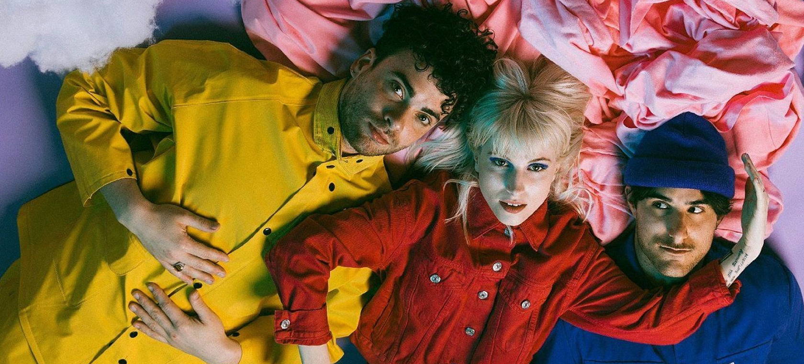
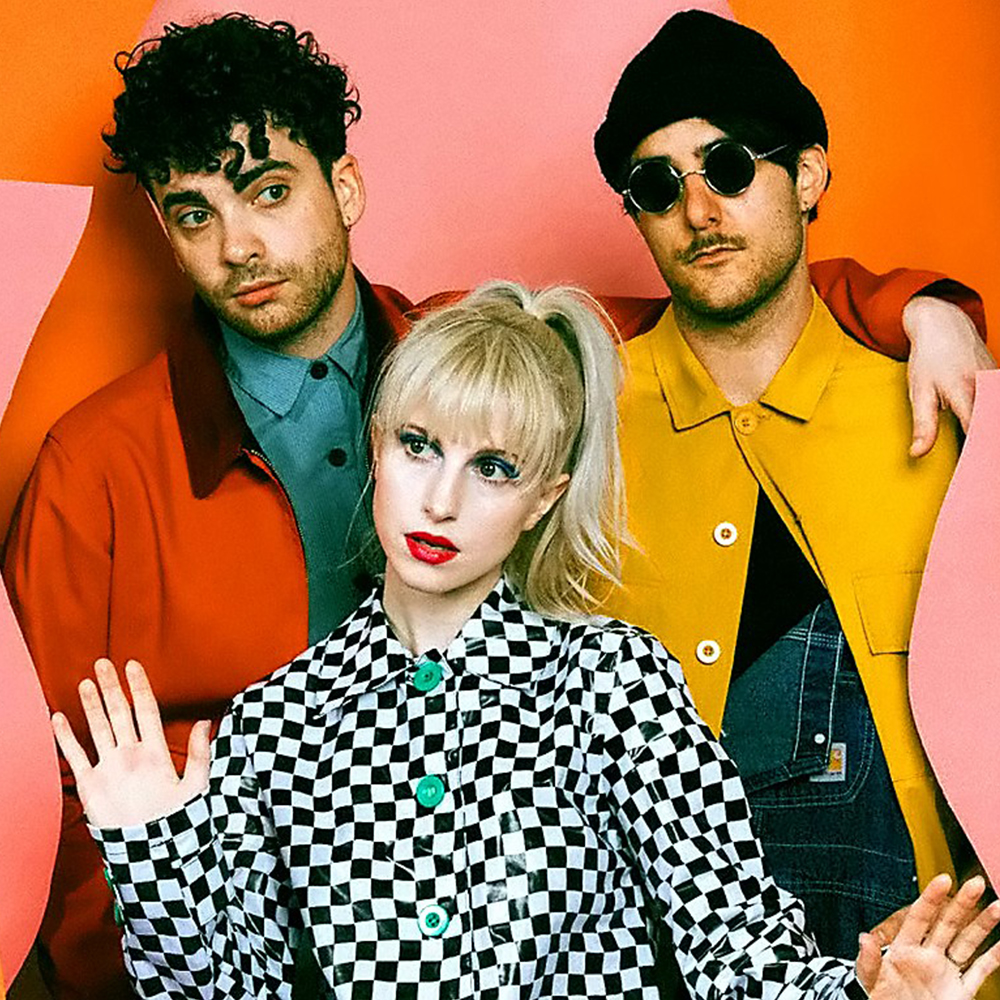
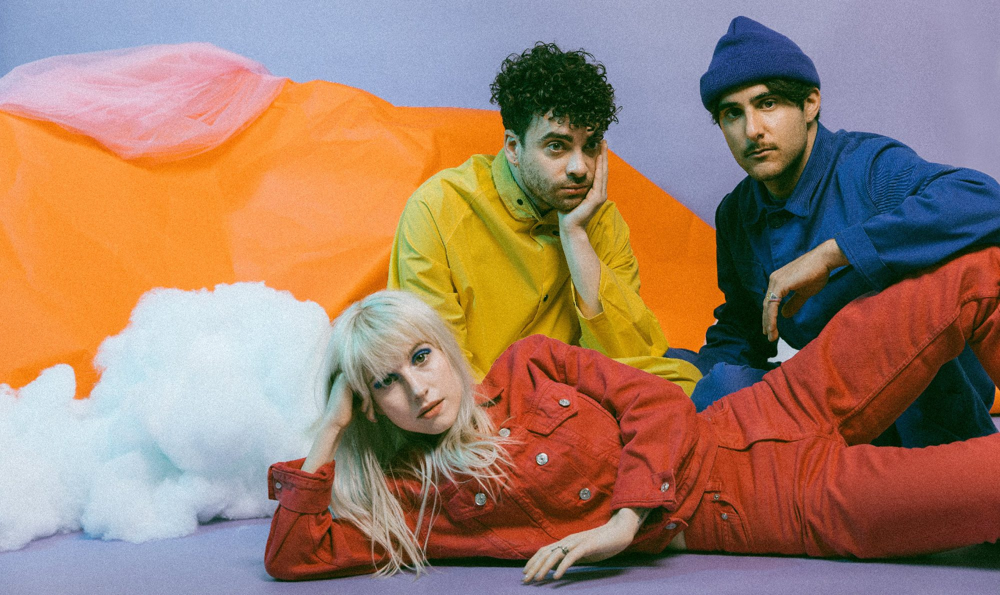

Paramore



Cuando Paramore reveló que estaban grabando juntos en enero de 2022, la respuesta de los fans de la música de todo el mundo fue inmediata y festiva. En los últimos años, la influencia y popularidad de Paramore se ha disparado, ya que la era del streaming les ha propulsado orgánicamente a una posición como una de las bandas de rock más grandes y culturalmente más atractivas del mundo. La banda, que se formó siendo adolescentes en Tennessee, ha pasado de ser unos jóvenes marginados a convertirse en auténticos íconos de la cultura pop a lo largo de sus 20 años de trayectoria, impregnando el panorama musical e inspirando a una nueva generación de talentos musicales.